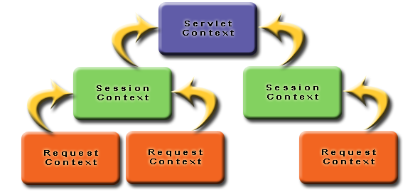

Now you should have an understanding of how Controllers and ActionMethods work in Waffle and it has been mentioned that no custom XML configuration files are needed. So how does everything get wired up? With simple java code.
Inorder to register Controllers (and other components Controllers may have dependencies on) we are required to extend the AbstractRegistrar class. It is the AbstractRegistrar class that makes the magic happen. A Registrar is used to register Waffle Actions and other components that satisfy constructor dependencies.
public class CustomRegistrar extends AbstractRegistrar {
public CustomRegistrar(Registrar delegate) {
super(delegate);
}
public void session() {
register("shoppingCart", ShoppingCartAction.class);
// register second and subsequent controllers or components
}
}Notice the method "session"? This links the method to 'session level controllers'.
The CustomRegistrar (or whatever you choose to call it) needs to be referenced in the web.xml (yes we can't completely get away from XML if we want to play in the J2EE world).
<context-param>
<param-name>org.codehaus.waffle.registrar.Registrar</param-name>
<param-value>com.thoughtworks.CustomRegistrar</param-value>
</context-param>Let's dig deeper into how the Registrar works and what functionality it provides. Assume we have the following three Classes in our application.
public class Store {
...
}public class ShoppingCart {
private Store store;
public ShoppingCart(Store store) {
this.store = store;
}
}public class CheckoutController {
private ShoppingCart shoppingCart;
public CheckoutController(ShoppingCart shoppingCart) {
this.shoppingCart = shoppingCart;
}
}With these classes one could imagine the Registrar looking similar to...
public class CustomRegistrar extends AbstractRegistrar {
public CustomRegistrar(Registrar delegate) {
super(delegate);
}
@Override
public void application() {
register(Store.class);
}
@Override
public void session() {
register(ShoppingCart.class);
}
@Override
public void request() {
register("checkout", CheckoutController.class);
}
}Components registered to the Application context level are shared across all users. Session level components are shared for a user across requests. And request level components only live as long as the request.
When an application starts up and the ServletContext is intialized your CustomRegistrar.application() method will be invoked. When a session is created for a user all the CustomRegistrar.session() will be invoked (that is per user and per session). When a request is initialized the CustomeRegistrar.request() method will be invoked.
Application level components only have access to other components registered in the application() method. Session level components can access their sibling components and those components registered under application(). Request level components can access their siblings component and their parent components (session()) and grandparent components (application()). In other words dependency resolution can traverse up the tree heirarchy but NOT down. The table below describes each of the available registration method provided by Waffle's Registrar.
| Method | Description |
| application | will be invoked upon ServletContext initialization. This should be used for those components that need to live for the entire length of the application. |
| session | will be invoked upon HttpSession creation. This should be used for those components that need to live for the entire length of a users session. |
| request | will be invoked upon ServletRequest initialization. This should be used for those components that need to live for the entire length of a request |
The diagram below shows a high level view of how the levels are seperated. As you might expect an application will have several concurrent sessions, and a session will more than likely handle several request (maybe not simultaneously). Of course a session from one user cannot be accessed by a session from another user, same hold true for requests.
By default the "register" methods cache instances created within the framework. That is, only a single managed instance is created. Again that is a "single managed instance" rather than a singleton. If your application requires a new instance of a particular component for each use you can do one of two things: first simply register the component to the REQUEST context; or utilize the registerNonCaching(...) method with Registrar. The registerNonCaching method, as their name describes, will not cache and share a component but rather a new instance of that component each time.
Registrar currently has the following registration methods:
| Methods | Description |
| void register(Class componentClass) | This method is useful for registering components other than Actions. |
| void register(Object key, Class componentClass) | Register the componentClass under the key name (key is used to locate Action from request). |
| void registerNonCaching(Class componentClass) | A new instance will be created for each class with the defined dependency. |
| void registerNonCaching(Object key, Class componentClass) | Similar to void register(Object key, Class componentClass) except that a new instance will be created for each dependent class. |
| void registerInstance(Object instance) | This method is useful for registering an instance directly. |
| void registerInstance(Object key, Object instance) | Register the instance directly with the underlying container under the key name provided. |
One last thing to note - we talk of CustomRegistrar here and in some our examples, we illustrate one called MyRegistrar. It can be called whatever you like. UserRegistrar, AdminRegistrar, AdminActionSetup, AdminSetup are all good names if the they make sense to you.